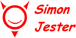

|
(You might also want to check out Simon's "Führer Dubya Spampaign" at SimonJester.org. - Editor)
Download the Starter Kit If you haven't read the classic SF novel, The Moon is a Harsh Mistress, by Robert A. Heinlein, this whole Simon Jester thing may be confusing you. Simon Jester was the "imaginary" creation of some of Heinlein's characters. He was a little devil who tormented the Lunar government with witty - and critical - jokes, ditties, poems, slogans, and cartoons. Later, Simon branched out into the poltergeist business by playing practical jokes on gov-goons and bureaucrats. He always signed his work with a little cartoon image of a grinning devil.
But even within the context of the novel, he wasn't real. "Simon" was anyone who wanted to bug the authoritarians ruling the Loonies. Any pissed-off miner could scribble a bit of seditious graffiti on a wall and attribute it to "Simon" with the easily scrawled logo. To the Authority, it seemed that Simon Jester was everywhere, all the time. Adopting The Idea This starter kit is intended to help the budding activist spread pro-freedom memes throughout the community by using the Simon Jester technique. A "meme" is an idea, a thought; hopefully a seed that will germinate in the recipient's mind and grow into a whole garden of worthwhile ideas. In theory, one exposes people to short, memorable phrases or images which stick with them; rather like the tune you can't get out of your head. In this case, the "tune" is the lines of Yankee Doodle Dandy and is meant to generate thoughts about liberty. To get you started, I've provided a few basic files. Once upon a time, several people expressed an interest in purchasing pre-printed kits. I invested out of pocket and produced a few kits for a marketing test. Not a one sold. So now I'm only making the files available for those with the gumption to obtain the cards, labels, and paper to print their own kits. That's what you're holding in your virtual hands now. If you do like the kit, it sure would be nice if you kicked in a little cash to show your appreciation. You can click the Donate link below. Despite my dislike of some of the formats, I've stuck to MS Word doc, .bmp, and .rtf because I expect that anyone can open them and preserve the formatting. What To Do With The Darned Things The business cards can be placed in envelopes with bill payments, left behind in waiting rooms and lobbies, or simply handed out. Or anything else that strikes your fancy. The sticky labels are ideally suited for semi-permanent placement where they're bound to be noticed. Postal Disservice drop boxes and DMV service counter tops spring to mind. So do government office building doors. If you intend to place these on private property (storefronts or the like) please do consider whether the owner might regard this as defacing her property. The election placards are great for placing anywhere that would also attract "real" campaign signs. Give the "Proud to be Gun Free" stickers to anti-gun suicidal maniacs and invite them to put their contra-survival principles into action by posting these little signs on their homes, cars, places of business, even their clothing. But don't expect too much; most anti-gunners lack principles. The "democracy" flyers can be fun to hand out at the polls, public debates, or other political venues. It really confuses the hell out of party hacks and other pollsters. The Simon boilerplate.bmp file is meant to allow you to create your own messages and images on cards and labels. And keep using the little Simon Jester logo.
About That Logo
Have fun, and don't get caught.
Did you like this article or the kit?
If there's anything specific you'd like to say about this article, please do so here. Comments may be used in an upcoming Letters to the Editor.
|